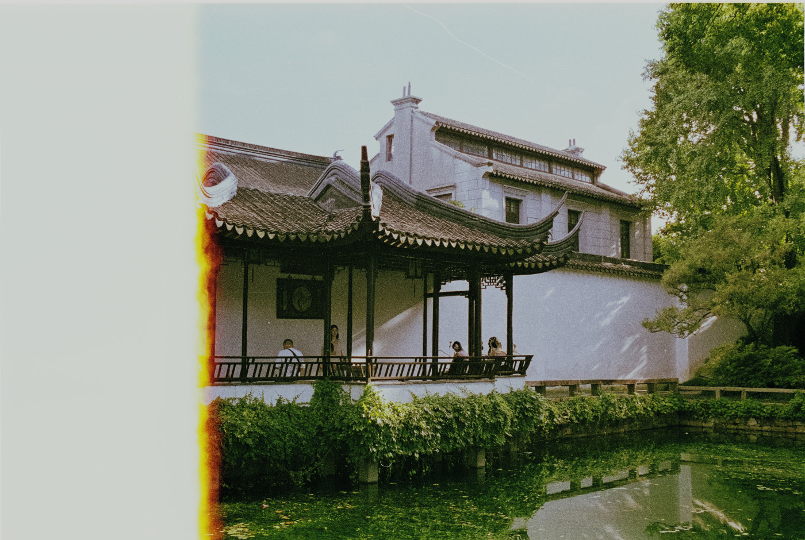
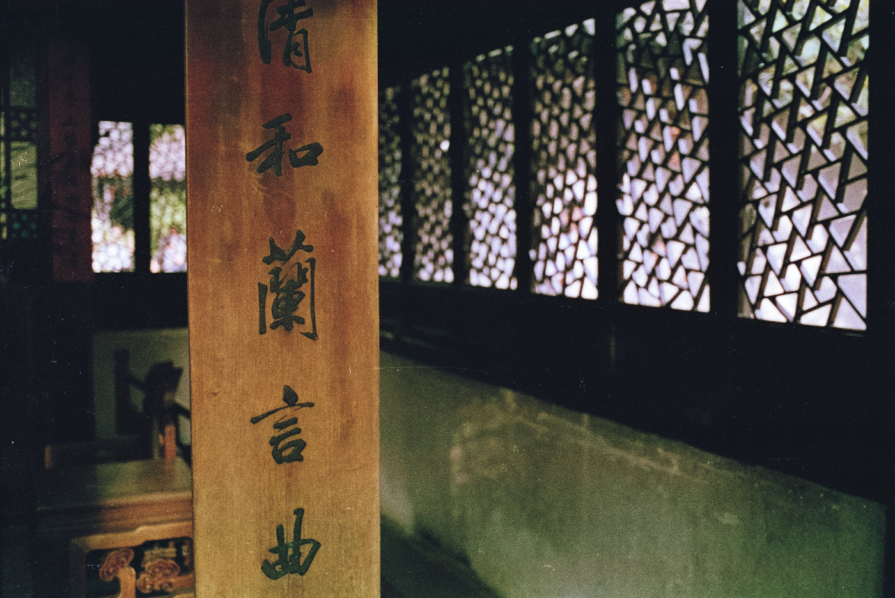
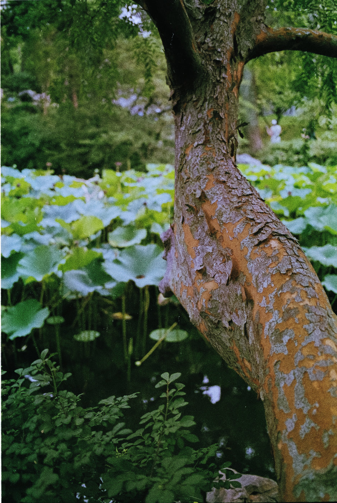
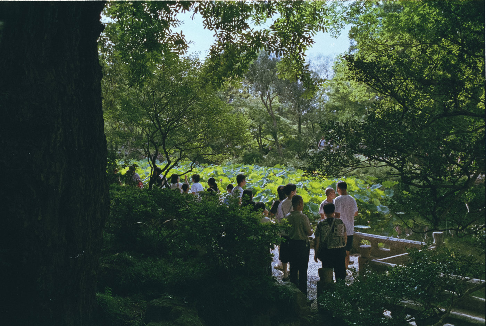

大约在8月中下旬的时候，我预约了参观苏州博物馆本馆，时间选了18点到19点。那天去早了，就想在附近转转，看到拙政园就在旁边，而且自己有园林卡，不妨进去看看。
但没想到拙政园也要预约，进入“苏州园林旅游”公众号，还好现场预约也来得及，于是就有了这场短暂的一小时速拍。
拙政园还是很多年前去过，人说家门口的公园反而去得少就是这个道理，虽然苏州园林甲天下。
这次想试验性地看看 EOS 50 胶片机是否还能工作，所以配了个 EF 40 饼干头，装个卷乐凯彩色200度，就入园了。
结果对出来的店扫照片并不满意，所以又用Dual4自扫了一遍。感觉层次比店扫更丰富了，但对于颜色还是没有把握。
不管了先发出来，胶片的偏色对我来说是个头痛事，也许就保持这样的颜色也是一种选择。




